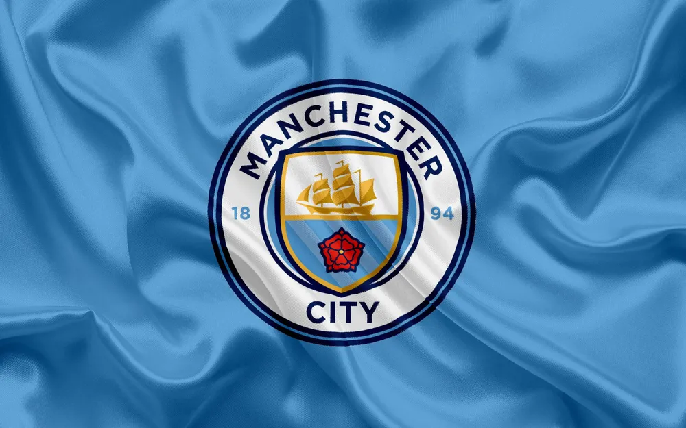
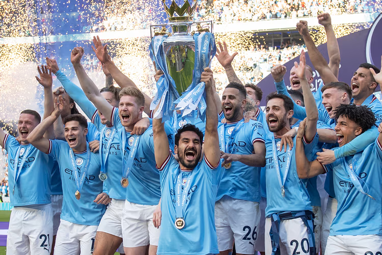

개요
영국 잉글랜드 프리미어 리그 소속의 프로축구 클럽. 연고지는 그레이터맨체스터주
맨체스터. 홈 구장은 에티하드 스타디움.
영국 축구 역사상 유일한 5관왕과 잉글랜드 축구 역사상 유일한 도메스틱
트레블(Domestic Treble) 및 리그 4연패를 달성한 클럽이다. 특히 프리미어
리그 역대 최다 승점 및 잉글랜드 축구 역사상 단 두 팀뿐인 트레블의 기록을
보유하고 있다.

역사
맨체스터 시티는 맨체스터 유나이티드 다음으로 프리미어 리그 출범 이후 가장 성공적인 구단으로, 특히 1992년 잉글랜드 축구 1부 리그가 프리미어 리그(Premier League)라는 이름으로 새롭게 탄생한 이후에는 21년간 8회의 리그 우승컵을 비롯해 총 25개의 우승컵을 들어올렸다.

특징
맨체스터 시티는 1880년 맨체스터 서부 고튼의 교회에서 세인트 마크스
(St. Mark's West Gorton)란 이름으로 창단되어 11월 구단 첫 경기가 치러졌다.
이후 1894년 재정난을 겪던 구단의 전체적인 개편으로 현재의 맨체스터 시티로 구단명을
변경하였다.
첫 전성기는 1960년대 중반으로 조 머서 감독 체제하에 잉글랜드 국내 4개 대회인 리그, FA컵,
EFL컵, 커뮤니티 실드와 구단 최초의 유럽 대항전 우승인 UEFA 컵위너스컵을 모두 제패하며
잉글랜드 최초로 국내 대회와 유럽 대항전을 동시에 우승하는 황금기를 누렸다.
역사적으로 잉글랜드 1부 리그의 전통있는 붙박이 팀으로 중상위권을 유지하던 리그에서 가장 입지가
탄탄한 터줏대감 클럽 중 하나였다.그러나 방만한 운영으로 구단 전체의 경영난을 겪으면서
1990년대 잉글랜드 프로축구 리그가 프리미어 리그로 개편되는 시기부터 승격과 강등을 거듭하는
구단 최악의 암흑기를 보냈다. 전통적인 시절을 뒤로하고 암흑기를 겪고 있던 도중 2008년 맨체스터
시티를 만수르 빈 자이드 알나얀이 인수했고 2012년 극적인 리그 우승을 거머쥐고 수많은 트로피를
들어올리며 잉글랜드를 넘어 유럽을 대표하는 구단으로 자리잡는다. 법적으로는 시티 풋볼 그룹과
칼둔 알 무바라크 회장이 그를 대신하여 구단을 지배하는 형태로 이루어져 있다.
스쿼드
| 포지션 | 등번호 | 이름 | 국적 |
|---|---|---|---|
| GK | 18 | 슈테판 오르테가 | 독일 |
| 31 | 에데르송 | 브라질 | |
| DF | 2 | 카일 워커 | 잉글랜드 |
| 3 | 후벵 디아스 | 포르투갈 | |
| 5 | 존 스톤스 | 잉글랜드 | |
| 6 | 네이선 아케 | 네덜란드 | |
| 24 | 그바르디올 | 크로아티아 | |
| 25 | 마누엘 아칸지 | 스위스 | |
| MF | 8 | 마테오 코바치치 | 크로아티아 |
| 11 | 제레미 도쿠 | 벨기에 | |
| 16 | 로드리 | 스페인 | |
| 17 | 케빈 더브라위너 | 벨기에 | |
| 19 | 일카이 귄도안 | 독일 | |
| 20 | 베르나르두 실바 | 포르투갈 | |
| FW | 9 | 엘링 홀란드 | 노르웨이 |
| 10 | 잭 그릴리쉬 | 잉글랜드 | |
| 47 | 필 포든 | 잉글랜드 | |
| 감독 | 펩 과르디올라 | ||
팬클럽 활동
우리 팬클럽은 맨체스터 시티를 사랑하는 만큼 다같이 모여 클럽 회원들끼리 다양한 활동을 즐깁니다!
- 경기 직관
- 실제로 영국의 맨체스터에 가서 맨체스터 시티의 환상적인 경기를 직관하는 영광을 누려보세요! 팬클럽에서 경기 직관 티켓을 무료로 지원해줍니다!
- 경기 응원
- 영국에 직접 가지 못하더라도 괜찮습니다! 국내에서 팬클럽이 대여한 장소에 모여 다같이 한마음으로 경기를 응원해보세요!
- 굿즈 구매
- 우리 팬클럽은 맨체스터 시티 유니폼을 자주 대량으로 구매하고 있습니다. 팬클럽을 통해 맨체스터 시티 굿즈, 유니폼을 더욱 저렴한 가격에 구매할 수 있습니다!